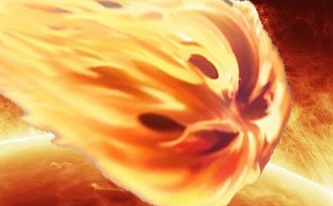
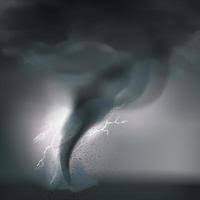

Empruntant ainsi le chemin de la fôret sacrée qui gruge de monstres et de créatures malveillantes, obédis tomba dans une embuscade tenu par les gobelins.
Une attaque frontale est lancée par l'ennemis ! …
Tu devras donc joisir une contre attaque pour aider notre héros à vaicre l'ennemis...
"fireball" est une attaque de grande portée et très puissante contistuée d'un assemblage de feu et d'air compressée  .
le "whirlwind of tears" est une attaque de tourbillon ravageur et qui est fatale .